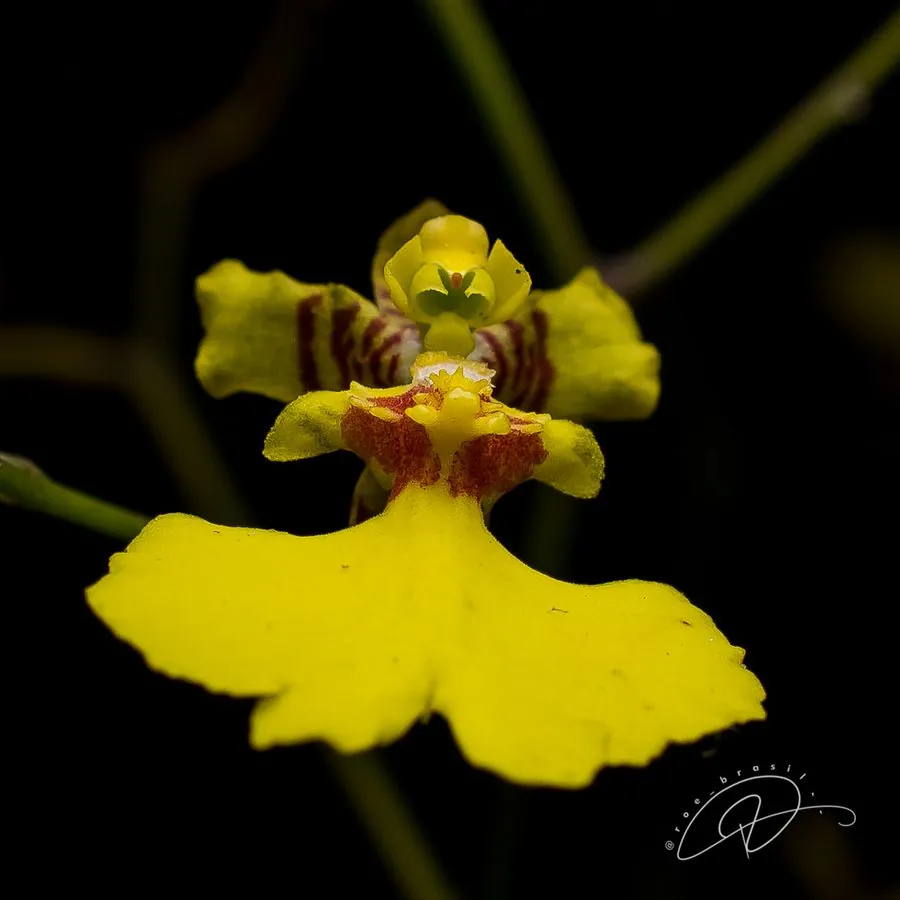

花卉与草本 · 植物界
文心兰 Oncidium flexuosum

兰科多年生附生草本，花朵小巧金黄、成串轻舞如金色蝴蝶，花期长，是切花与盆栽的常见兰花，原产巴西。
- 分类
- 门被子植物门纲木兰纲目天门冬目科兰科属文心兰属
- 栖息环境
- 巴西热带雨林的树干上，喜温暖、湿润、半阴
- 地理分布
- 原产巴西，现世界各地栽培，中国南方大量生产
- 保护级别
- 暂无评估；CITES 附录Ⅱ（兰科植物）
物种志
文心兰为兰科文心兰属多年生附生草本，假鳞茎扁球形，叶片 2–3 枚，带状。花葶自假鳞茎抽出，多分枝，着花数十朵，花小，金黄色或黄褐色，唇瓣宽大、形似裙摆，花期秋冬，单株花期可达一两个月；果实为蒴果。
文心兰原产巴西的热带雨林，附生于树干上，喜温暖、湿润、半阴和通风良好的环境，忌强光暴晒和积水。它花形奇特、花朵轻盈，成串开放如金色蝴蝶飞舞，因此有“跳舞兰”之称，是切花和盆栽的常见兰花；栽培常用树皮、水苔等透气基质，花后剪去花葶、保留叶片养球。
形态与习性
- 株高花葶长 30–60 厘米，着花数十朵
- 花期秋冬，单株花期可达一两个月
- 果期花后结蒴果
- 光照喜半阴散射光
- 水分喜湿润，忌积水
- 土壤以树皮、水苔等透气基质栽培
- 繁殖分株繁殖
- 主要用途切花、盆栽观赏
趣味知识
- 文心兰花朵轻盈、成串开放，像金色蝴蝶在跳舞，因此称“跳舞兰”。
- 它原产巴西热带雨林，是附生兰花。
- 单株花期可达一两个月，是切花和盆栽的常见兰花。
- 栽培常用树皮、水苔等透气基质，忌积水。